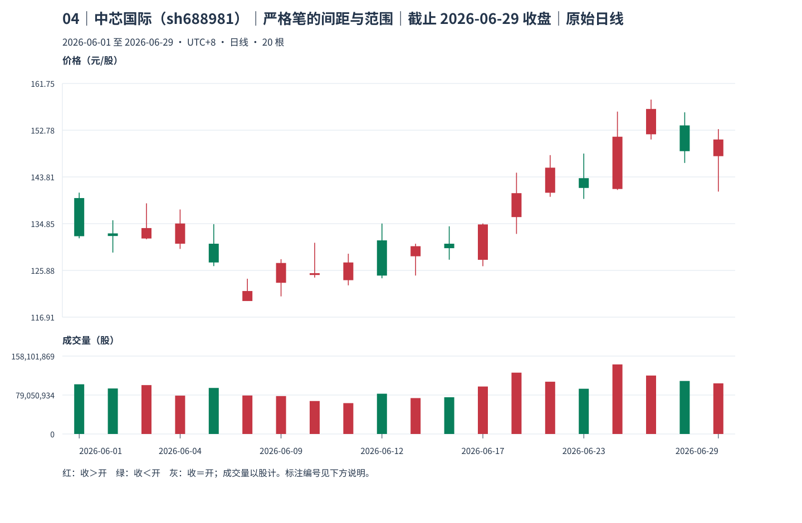
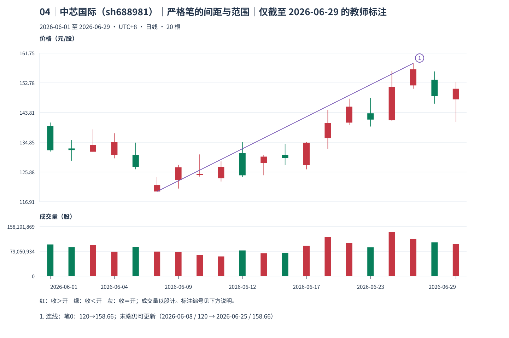
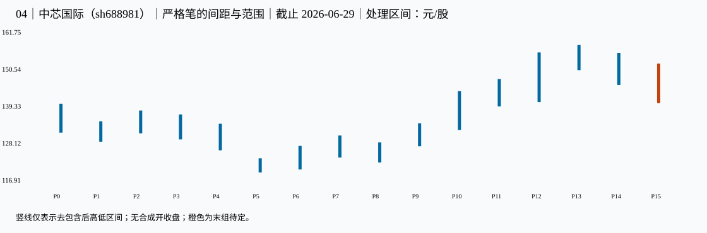

04｜中芯国际（sh688981）｜严格笔的间距与范围｜本包讲解
教师讲解仅截止 2026-06-29；先保留同编号原答，逐小段核对、确认理解后再继续。
真实未复权日线；价格单位元/股（CNY/share），成交量单位股（shares），横轴按实际交易日顺序。窗口避开已知价格基准变化，其他公司行为及现金分红日历仍未穷尽核准；价格差不单独证明技术破位、经济损失或投资总回报。样本按教学需要事后选取，不用于估计模式频率。
声明起点 2026-06-01，首对 raw 0=[132.040,140.800]、raw 1（2026-06-02）=[129.300,135.500]，互不包含，高低共同向下。只按本窗口启动，未补造更早热身资料，也未绑定此前已确认段；左边界限制仍保留，首个笔端点不能自动作为真实段起点。
这一例实际算出了什么
所选两端为 底 P5，2026-06-08 的 120 元/股 → 顶 P13，2026-06-25 的 158.66 元/股；三组分别占 [4, 5, 6] 与 [12, 13, 14]。处理中心距 13−5=8，两组三组之间独立 P 号为 [7, 8, 9, 10, 11]，共 5 组。
中心至中心真实处理范围为 [120,158.66] 元/股；两端局部分型 formed_at 分别为 2026-06-09、2026-06-26，known_at 分别为 2026-06-10、2026-06-29。极值发生日不能替代这两项证据时刻。
本笔端点覆盖范围 [120,158.66]，中心距≥4，至少留一独立组；分型证据于 2026-06-29 齐备，状态 latest_endpoint_revisable。这接受的是本窗口口径内的一笔；最后端点仍可由更极端同类分型更新，尚无已完成 B0 资格。
known_at 是本窗口、给定口径下边界证据齐备之日，空值表示尚待；confirmed_at_cutoff＝本截止内分型满足；provisional_right_group＝右组尚可吸收；provisional_fractal＝笔端点仍待；latest_endpoint_revisable＝末端仍可修订；accepted_at_cutoff＝本次接受。所有状态均非永久确认。
对照原图、标注和处理区间



展开本截止的逐根映射、分型、笔、拒绝与修订证据
1 原始 K 线 → 处理区间
| 原始号 | 日期 | 开 | 高 | 低 | 收 | 映射到 |
|---|---|---|---|---|---|---|
| 0 | 2026-06-01 | 139.760 | 140.800 | 132.040 | 132.440 | P0 |
| 1 | 2026-06-02 | 132.980 | 135.500 | 129.300 | 132.480 | P1 |
| 2 | 2026-06-03 | 132.000 | 138.750 | 131.850 | 134.000 | P2 |
| 3 | 2026-06-04 | 131.000 | 137.570 | 130.000 | 134.880 | P3 |
| 4 | 2026-06-05 | 131.000 | 134.750 | 126.700 | 127.400 | P4 |
| 5 | 2026-06-08 | 120.000 | 124.280 | 120.000 | 121.920 | P5 |
| 6 | 2026-06-09 | 123.500 | 128.030 | 120.890 | 127.300 | P6 |
| 7 | 2026-06-10 | 125.000 | 131.180 | 124.500 | 125.340 | P7 |
| 8 | 2026-06-11 | 124.000 | 129.080 | 123.010 | 127.400 | P8 |
| 9 | 2026-06-12 | 131.640 | 134.870 | 124.370 | 124.880 | P9 |
| 10 | 2026-06-15 | 128.590 | 131.000 | 124.890 | 130.520 | P9 |
| 11 | 2026-06-16 | 131.000 | 134.340 | 127.930 | 130.140 | P9 |
| 12 | 2026-06-17 | 127.910 | 134.880 | 126.680 | 134.700 | P9 |
| 13 | 2026-06-18 | 136.110 | 144.630 | 132.880 | 140.700 | P10 |
| 14 | 2026-06-22 | 140.780 | 148.000 | 140.000 | 145.590 | P11 |
| 15 | 2026-06-23 | 143.580 | 148.300 | 139.600 | 141.700 | P11 |
| 16 | 2026-06-24 | 141.500 | 156.350 | 141.320 | 151.530 | P12 |
| 17 | 2026-06-25 | 152.000 | 158.660 | 151.000 | 156.860 | P13 |
| 18 | 2026-06-26 | 153.700 | 156.220 | 146.500 | 148.760 | P14 |
| 19 | 2026-06-29 | 147.800 | 152.990 | 141.000 | 151.000 | P15 |
| 处理号 | 原始号 | 日期范围 | [低,高] | 低点实际日 | 高点实际日 | 合并方向 | 形成/末次修改 | 右边界已知日 |
|---|---|---|---|---|---|---|---|---|
| P0 | [0] | 2026-06-01—2026-06-01 | [132.04,140.8] | 2026-06-01 | 2026-06-01 | 无合并 | 2026-06-01 | 2026-06-02 |
| P1 | [1] | 2026-06-02—2026-06-02 | [129.3,135.5] | 2026-06-02 | 2026-06-02 | 无合并 | 2026-06-02 | 2026-06-03 |
| P2 | [2] | 2026-06-03—2026-06-03 | [131.85,138.75] | 2026-06-03 | 2026-06-03 | 无合并 | 2026-06-03 | 2026-06-04 |
| P3 | [3] | 2026-06-04—2026-06-04 | [130,137.57] | 2026-06-04 | 2026-06-04 | 无合并 | 2026-06-04 | 2026-06-05 |
| P4 | [4] | 2026-06-05—2026-06-05 | [126.7,134.75] | 2026-06-05 | 2026-06-05 | 无合并 | 2026-06-05 | 2026-06-08 |
| P5 | [5] | 2026-06-08—2026-06-08 | [120,124.28] | 2026-06-08 | 2026-06-08 | 无合并 | 2026-06-08 | 2026-06-09 |
| P6 | [6] | 2026-06-09—2026-06-09 | [120.89,128.03] | 2026-06-09 | 2026-06-09 | 无合并 | 2026-06-09 | 2026-06-10 |
| P7 | [7] | 2026-06-10—2026-06-10 | [124.5,131.18] | 2026-06-10 | 2026-06-10 | 无合并 | 2026-06-10 | 2026-06-11 |
| P8 | [8] | 2026-06-11—2026-06-11 | [123.01,129.08] | 2026-06-11 | 2026-06-11 | 无合并 | 2026-06-11 | 2026-06-12 |
| P9 | [9, 10, 11, 12] | 2026-06-12—2026-06-17 | [127.93,134.88] | 2026-06-16 | 2026-06-17 | up | 2026-06-17 | 2026-06-18 |
| P10 | [13] | 2026-06-18—2026-06-18 | [132.88,144.63] | 2026-06-18 | 2026-06-18 | 无合并 | 2026-06-18 | 2026-06-22 |
| P11 | [14, 15] | 2026-06-22—2026-06-23 | [140,148.3] | 2026-06-22 | 2026-06-23 | up | 2026-06-23 | 2026-06-24 |
| P12 | [16] | 2026-06-24—2026-06-24 | [141.32,156.35] | 2026-06-24 | 2026-06-24 | 无合并 | 2026-06-24 | 2026-06-25 |
| P13 | [17] | 2026-06-25—2026-06-25 | [151,158.66] | 2026-06-25 | 2026-06-25 | 无合并 | 2026-06-25 | 2026-06-26 |
| P14 | [18] | 2026-06-26—2026-06-26 | [146.5,156.22] | 2026-06-26 | 2026-06-26 | 无合并 | 2026-06-26 | 2026-06-29 |
| P15 | [19] | 2026-06-29—2026-06-29 | [141,152.99] | 2026-06-29 | 2026-06-29 | 无合并 | 2026-06-29 | 末组仍可吸收 |
2 分型：发生与知道分列
| 顶/底 | 中心/三组 | 极值日/价 | 三组最早形成日 | 右组末次吸收 | 边界已知日 | 截止状态 |
|---|---|---|---|---|---|---|
| bottom | P1: [0, 1, 2] | 2026-06-02: 129.3 | 2026-06-03 | 2026-06-03 | 2026-06-04 | confirmed_at_cutoff |
| top | P2: [1, 2, 3] | 2026-06-03: 138.75 | 2026-06-04 | 2026-06-04 | 2026-06-05 | confirmed_at_cutoff |
| bottom | P5: [4, 5, 6] | 2026-06-08: 120 | 2026-06-09 | 2026-06-09 | 2026-06-10 | confirmed_at_cutoff |
| top | P7: [6, 7, 8] | 2026-06-10: 131.18 | 2026-06-11 | 2026-06-11 | 2026-06-12 | confirmed_at_cutoff |
| bottom | P8: [7, 8, 9] | 2026-06-11: 123.01 | 2026-06-12 | 2026-06-17 | 2026-06-18 | confirmed_at_cutoff |
| top | P13: [12, 13, 14] | 2026-06-25: 158.66 | 2026-06-26 | 2026-06-26 | 2026-06-29 | confirmed_at_cutoff |
3 严格笔与拒绝项
| 笔号/方向 | 起点日/价 | 终点日/价 | 处理中心间距 | 全范围 | 分型证据齐备日 | 状态 |
|---|---|---|---|---|---|---|
| 0 | 2026-06-08: 120 | 2026-06-25: 158.66 | 8 | [120,158.66] | 2026-06-29 | up; latest_endpoint_revisable |
| 起点 | 候选终点 | 中心距 | 拒绝原因 |
|---|---|---|---|
| 2026-06-02 | 2026-06-03 | 1 | spacing |
| 2026-06-08 | 2026-06-10 | 2 | spacing |
| 2026-06-08 | 2026-06-11 | 3 | same_kind_not_extreme |
4 同类极值更新记录
| 旧端点 | 新端点 | 修订首次观察日 | 新端点分型确认日 | 原因 |
|---|---|---|---|---|
| 2026-06-02: 129.3 | 2026-06-08: 120 | 2026-06-09 | 2026-06-10 | same_kind_more_extreme |
仅本包计算证据 JSON；M11；M12。本图不产生已完成线段、中枢或收益证明。
本包核对完毕后，进入下一份原图；仍须先保存下一包自己的回答。